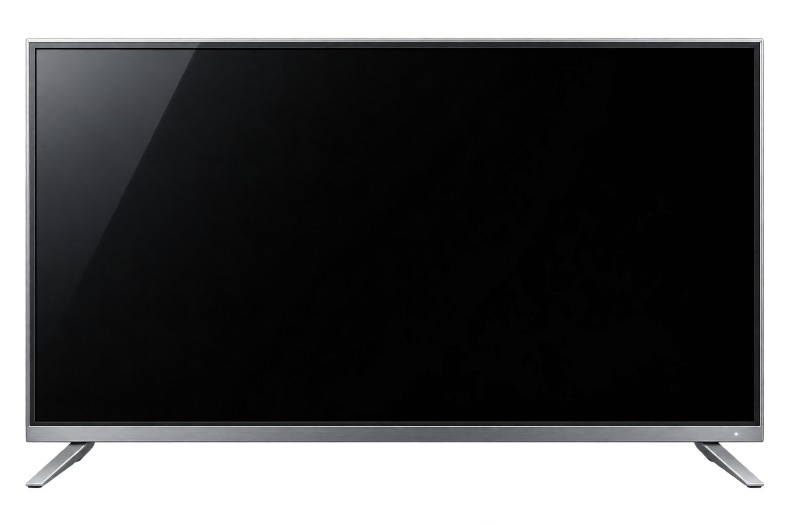
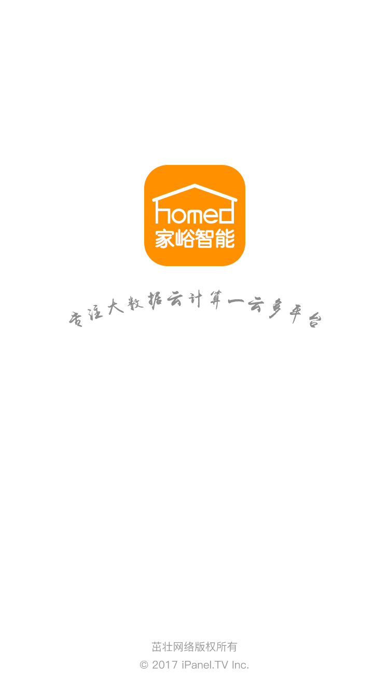
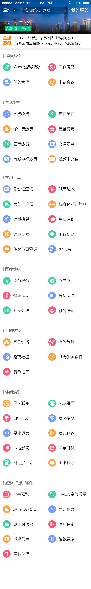

图文列表
缩略图在左、标题与时间信息在右，每条内容沿用相同结构。适合内容较多的栏目，方便连续扫读和比较。
让客厅的屏幕，
延伸到掌心。
围绕影音内容、家庭服务和设备控制，
组织不同场景下的页面与操作。



家峪 / 移动端应用
HOMED 的界面覆盖内容推荐、直播、城市服务与家庭设备控制。设计的重点，是让不同场景保有各自的辨识度，同时在导航、操作反馈与橙色视觉线索中形成一套完整体验。
选取内容浏览、直播和设备控制三组界面，说明各自的信息组织方式。
电影页把排序与筛选放在海报列表上方；点播详情依次展示视频、操作栏、相关推荐和评论。
Bo 首页提供直播内容入口；直播中通过底部工具展开点赞、弹幕与设置选项。
设备主页分开展示监控信息、常用场景与设备；空调页集中呈现温度、模式、风向和开关。
根据内容数量和阅读重点，选用列表、海报或专题组合。下面六张版式原稿，展示图片、标题和辅助信息的不同排列。
缩略图在左、标题与时间信息在右，每条内容沿用相同结构。适合内容较多的栏目，方便连续扫读和比较。
顶部用大海报突出重点内容，下方接紧凑的图文列表。首屏先给出视觉重点，再提供更多浏览入口。
单图内容采用左文右图，多图内容把三张缩略图排在标题下方。来源、时间和关闭入口放在条目底部，让不同图片数量的内容共用一套信息层级。
每条内容先展示大图，再补充标题与摘要。图片吸引注意，文字帮助判断内容，适合需要更多背景说明的推荐。
大海报之后，按小专题组织图文条目，每组保留查看更多的入口。先看主题，再在主题内选择内容，避免所有条目混成一列。
统一的大海报承载直播画面，标题和直播标记叠在下方暗色区域。相比普通图文列表，更突出正在播什么以及直播状态。
从进入搜索、输入关键词到查看结果，用不同页面承接每一步操作。长结果页可点击图片查看完整内容。
历史关键词以标签排列，并保留清除入口；热门内容先展示海报，再接文字排行。已有目标时可复用关键词，还没想好时也有可浏览的内容。
输入后直接列出相关名称，把相近节目和不同季数分行展示。列表紧接搜索框，方便补全关键词；清除与取消入口仍在顶部。
麦克风入口放在搜索框内，进入语音状态后，用居中的麦克风与音量条提示正在接收声音。背景保留原来的搜索页，操作位置更容易理解。
顶部按频道、电视剧、电影和综艺分类，命中的关键词用橙色突出。剧集提供选集，电影提供播放与缓存，其他内容以图文条目展示，让结果带上对应的操作入口。
筛选展开在分类栏下方，按相关性、发布时间、热播程度、时长和时间范围缩小结果。选中条件用橙色标记，方便确认当前筛选范围。
从点播操作、手势提示到直播时移，分别说明观看时的控制方式与反馈。
播放、下一集和进度条放在同一条操作栏，当前时间与总时长分列进度两侧。收藏、分享、下载和剧集入口放在顶部，与观看中的操作分开。
左侧上下滑动调节亮度，右侧上下滑动调节音量，横向滑动控制快退和快进。暗色遮罩降低视频干扰，橙色手势与箭头对应滑动方向。
顶部放返回、节目名称与频道入口，底部保留时间和进度。半透明底色承托白色图标，尽量少遮挡视频内容。
拖动进度时，在定位点上方显示缩略图；时间数字与橙色进度同步提示位置，方便判断要回看的片段。
频道列表从右侧展开，保留左侧视频画面。当前频道用橙色和播放标记提示，右上角提供关闭入口。
锁定后隐藏顶部和底部工具，只留下解锁入口，让观看时的触碰不轻易触发其他控件。
平台图标配合名称排列，关闭和取消入口同时保留。分享选项临时覆盖画面，操作完成后可回到播放。
黑底保留品牌标识和加载提示，返回与退出全屏仍可见，避免等待时找不到离开入口。
设备多时，先解决查找；进入单台设备后，再突出状态和常用操作。
顶部保留搜索和房间分类，同一空间的设备放在一张列表中。设备图标帮助识别类型，右侧开关直接显示状态，减少进入详情页的次数。
上方集中展示风类和风档，下方以两行按钮承载控制。保留与实体遥控器接近的操作名称，方便识别风类、定时和摇头等功能。
橙色用于导航和主要操作，深色背景用于影音播放，浅色背景用于信息列表和设备控制。
从进入应用到内容观看，再到直播与家庭设备控制。按功能收拢原始设计稿，完整展示这套应用的界面跨度。
明快的颜色与主题插画，让不同使用场景在进入应用前就被看见。
电影筛选、点播详情、专题与排行榜，分别对应查找和浏览内容的不同方式。
频道列表展示正在播出的节目，详情页提供节目预约，并用提示反馈预约结果。
首页按办公、缴费、工具等类别组织服务；便民与社区页分别汇集公共服务和社区事务。
从直播内容列表、开播准备到直播中的操作菜单，展示观看与开播的主要页面。
从设备概览到房间分类，再分别展示空调、电视和电风扇的遥控方式。
从全部分类进入明星百科，查看人物资料、相关明星与排行榜。